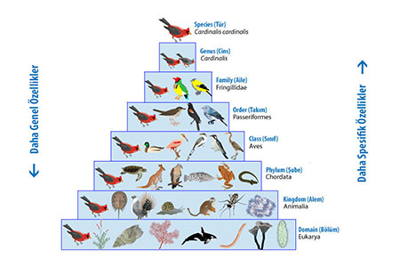

Bugün, yaklaşık 1,8 milyon farklı organizma çeşidinin var olduğu bilinmekte ve her yıl birkaç bini daha teşhis edilmektedir. Bazı uzmanlar, 10 milyon kadar farklı organizma türünün var olduğunu kabul etmektedir. Organizmaların vücudu, 5 mikron çapındaki bakteriden 100 metreden daha boylu sekoya ağaçlarına değişmektedir. Bu çok büyük çeşitlilikteki organizma sayısı ile uğraşmak için, biyologlar, uluslararası geçerli bir sisteme göre, organizmaları tanılar ve adlandırırlar. Bu, çeşitli canlılar ve bunların özellikleri hakkında birbiriyle iletişim kuran bilim adamlarının işini kolaylaştırır. Taksonomi, canlıların sınıflandırılması ve adlandırılması ile ilgili biyoloji dalıdır.
Eski sınıflandırma girişimlerinin hepsinde, canlılar, bitkiler alemi ve hayvanlar alemi olarak iki büyük gruba ayrılmıştır. Bu iki grup da çeşitli şekillerde alt bölümlere ayrılmıştır. Sınıflandırmada ilk büyük ilerleme, İngiliz doğa bilimci John Ray tarafından 1600 'lerin ortasında yapılmıştır. Ray, 18.000 'den fazla farklı bitki çeşidini tanıladı ve sınıflandırdı. Aynı zamanda, birkaç değişik hayvan grubunun üyelerini de sınıflandırdı. Her bir farklı organizma çeşidi için tür terimini de ilk kullanan Ray olmuştur. Ray, bir türü, yapısal olarak aynı olan ve karakteristiklerini döllerine aktaran bir organizma grubu olarak tanımladı. Daha geniş bir grupta bir araya getirilen yakın akraba türlere cins adı verildi. Akraba cinsler bir sonra gelen daha geniş gruplara sıralandılar. İsveçli botanikçi Carolus Linnaeus çoğunlukla çağdaş taksonominin kurucusu olarak bilinir. Linnaeus, halen kullanılan, organizmaları sınıflandırma ve isimlendirme yöntemlerini kurmuştur. Fazlasıyla kullanışlı sisteminde, bitki ve hayvanlar kolaylıkla tanınabilecek bir şekilde düzenlenmiştir. Ray gibi, Linnaeus de, kurduğu sınıflandırma sisteminde, temel olarak yapısal benzerlikleri kullanmıştır.
Linnaeus ile günümüz arasındaki zamanda, taksonomistler sınıflandırma sistemine bazı kategoriler eklemişleredir. En geniş ve en kapsamlı kategori alemdir. En dar kategori 53 türdür. Canlıların sınıflandırılmasında, çoğunlukla kullanılan kategoriler: alem, şube, sınıf, takım, familya, cins ve tür. Yakın türler bir cinste, yakın cinsler bir familyada, yakın familyalar bir takımda, yakın takımlar bir sınıfta, yakın sınıflar bir şubede ve yakın şubeler bir alemde gruplandırılır.
Organizmaları adlandırma sistemine nomenclature denir. Organizmaları adlandırmanın modern sistemi, Linnaeus tarafından türetilmiştir. Linnaeus 'den önce, her bir tür, türü tanımlayan bir miktar Latince kelimenin izlediği, cinsinin ismi ile tanımlanmaktaydı. Bazı durumlarda, cins adını, sekiz veya on kelimelik bir dizi izleyebilmekteydi. Linnaeus, kitaplarında her bir türü, ikisi de Latince, sadece bir tek tanımlayıcı kelimenin izlediği, cinsinin adı ile tanılamıştır. Her bir cins içinde, türlerin tanılanmasında, bir kelime asla iki kez kullanılmamıştır. Bugün kullanılan sistem de budur.
Her bir organizma çeşidinin iki-kelimeli sistemle kimliğinin belirlenmesi, binominal (“iki adlı”) nomenclature olarak bilinir. Bu bir kişinin tanıtılmasında, bir ad ve bir soyadın kullanılması sitemine benzemektedir. Cins ismi kişinin soyadına, tür ismi de adına karşılık gelmektedir.
Günümüz biyolojisinde, her bir organizma çeşidinin bilimsel adı olan, iki kelimeli bir Latince adı vardır. İlk kelime cins ismidir, ikincisi cins içinde bu türü tanılar. Diğer yandan, bitki ve hayvanların büyük çoğunluğunun her dilde kullanılan toplumsal adları vardır. Ancak bazı nedenlerle bu adlar, bilimsel kullanım için uygun değildir. Öncelikle, alışılmış adlar çoğu kez yanıltıcı ve hatalı olabilmektedir. Örneğin İngilizce'de yıldızbalığı olarak adlandırılan denizyıldızı (beşparmak) bir balık değildir. Gümüşbalığı aynı zamanda bir böceğin adıdır. Diğer yandan, bir türün farklı birkaç alışılmış adı da olabilmektedir.
Kuzey Amerika'daki alakarganın, Cyanocitta chiristata maviceket, mısır hırsızı ve yuva hırsızı gibi adları vardır. Türkçe 'de Kestane kargası, Garrulus glandarius (L.), alakarga, ayrılık kargası, meşe kargası, gisa kuşu olarak da bilinir. Bazı durumlarda, aynı genel ad iki veya daha fazla farklı türler için kullanılmaktadır. Böğürtlen (Rubus spp.), çeşitli ülkelerde sayıları on dolayında olabilen ve toplam tür sayısı 400'ün üzerinde olan çeşitli bitki türlerine verilen addır. Bu türlerden bir tanesi, lezzetli ve güzel kokulu meyvesinden dolayı kültüre alınan ahududu, Rubus ideus L. 'dur. Son olarak, toplumsal adlar dilden dile değişir. Köpek, İngilizce “dog”, İspanyolca “perro” ve Japonca “inu” dur. Ancak, Canis lupus familiaris L. bilimsel adı, her ülkedeki zoologlar tarafından anlaşılır.
1800 'lü yılların ortalarına kadar bilim adamlarının çoğu her bir türü sürekli ve değişmez bir şekil olarak düşünürlerdi. Bir türün tanımlanması, o tür için standart olarak hizmet görecek tip numune denilen tek bir örneğe dayandırılmıştır. Tip numune varyasyonlarının çok az bir öneminin olduğu kabul ediliyordu. Bugün, türlerdeki varyasyonların, türlerin hayatta kalabilmesi için önemli oldukları bilinmektedir. Bu gerçek, 1859 yılında ortaya atılan evrim kuramından sonra fark edilmiştir. Bu kuram uzun bir zaman döneminde, bir türün ya çevre koşullarına tepki vererek değiştiği ya da ortadan kalktığını ileri sürmektedir. Bugün, bir tür, doğada kendi içinde üreyen benzer organizmaların doğal bir grubu ya da populasyonu olarak tanımlanmaktadır. Eğer bir türün üyeleri uzun bir zaman süresince bağımsız olarak üreyen, birbirinden ayrılmış gruplar meydana getirirse, her bir grup özel çevrenin uygun koşulları ve isteklerine bağlı olarak farklı gelişecektir. Sonuçta, ayrılmış gruplar ayrı türler olarak sınıflandırılabilecek kadar farklı olabilmektedirler. Bu yüzden taksonomistler sınıflandırmalarını yapısal benzerlikten daha başkalarına dayandırmaktadırlar. Sınıflandırmacılar, belirli proteinlerde amino asit dizilişi, embriyonik gelişme modeli, davranış gibi biyokimyasal benzerlikleri ve fosillerin incelenmesini de değerlendirmektedirler. Taksonomide sağlanan ilerlemeye rağmen, hala çözümlenmemiş, ortada duran problemler vardır. Bunların çoğu en basit canlıları, özellikle mikroorganizmaları kapsamaktadır. Bu canlı formlar çoğunlukla, kolayca kategorilere ayrılamayacak kadar büyük çeşitlilikte, karmaşık formlar gösterir.
Tüm eski sınıflandırma girişimlerinde, canlılar, bitkiler alemi ve hayvanlar alemi olarak iki büyük gruba ayrılmıştır. Bu sistem büyük organizmalar için iyi işlemektedir. Ağaçlar, çayırlar, çiçekler ve çalılar kuşkusuz bitkidirler. Kurbağalar, balıklar, böcekler, kuşlar ve kediler besbelli hayvandırlar. Ancak, bazı organizmalar bitki ve hayvanların her ikisine de benzer özellikler gösterir. Örneğin, bir hücreli, kamçılı bir organizma olan Euglena, bitkiler gibi fotosentez yapmanın yanında bir hayvan gibi yer değiştirerek kendiliğinden hareket edebilir. Euglena sınıflandırmada problem çıkarır. Açıkça hayvan veya bitki olmayan organizmaları sınıflandırma problemini çözmek için, taksonomistler modern sınıflandırma sistemlerine yeni alemler eklemektedirler. Bununla birlikte, kaç tane ek aleme ihtiyaç olduğu ve bu alemlere hangi organizmaların yerleştirileceği üzerinde evrensel bir birlik yoktur. Her bir olası düzenlemenin bazı üstünlükleri ve bazı sakıncaları vardır. Basit organizmaları sınıflandırmak için tamamen tatmin edici bir yolun olacağı görünmüyor. Burada beş/altı alemli bir sınıflandırma sistemini tanıtacağız. Bu beş/altı alem Monera (archaebacteria ve eubacteria), Protista, Fungi, Plantae ve Animalia 'dır. Bu sistem büyük organizma grupları arasındaki belirli çok temel farkları vurgulamaktadır. Aynı zamanda, bir dereceye kadar alemler içindeki sınıflandırmayı da kolaylaştırmaktadır. Bu beş alemin genel özellikleri aşağıda kısaca tanıtılmıştır.
Monera aleminin üyeleri çoğunlukla birhücreliler olmakla, bazı çeşitleri zincirler, salkımlar veya birbirine tutunmuş hücre kolonileri oluştururlar. Moneran hücreler diğer hücrelerden temelde farklıdırlar. Bu hücrelerin zarlı, organize olmuş bir çekirdekleri yoktur. Mitokondrium, lizozom ve Golgi yapıları gibi diğer hücrelerde bulunan pek çok organelden yoksundurlar. Hücre duvarları vardır, fakat bu bitkilerdeki hücre çeperlerinden kimyasal bakımdan farklıdır.Monera aleminin sadece iki şubesi vardır, bunlar bakteriler ve mavi-yeşil alglerdir. Bakterilerin çoğu fotosentez yapmazlar ve besinleri çevreden absorbe etmek zorundadırlar. Mavi-yeşil algler klorofil içerir ve fotosentez yaparlar. Ancak, bu klorofil kloroplastların kapsamında değildir. Ancak önceden Monera (Bakteriler ve Mavi-Yeşil Algler/Bakteriler) alemi içinde değerlendirilen Arkebakteriler (Archaebacteria) bazı özellikleri nedeniyle ayrı bir grup olarak ele alınmaktadır. Arkebakteriler, Monera içinde gerçek peptidoglikan yapıları olmayan ve bazı özellikleri bakımından bakterilerden ayrı bir grup olarak tanımlanan, aşırı sıcak, aşırı tuzlu ortamlarda yaşayabilen mikroorganizmalardır. Arkebakteriler, Hücre duvarlarında peptidoglikan katman bulunmayan ve karakteristik ribozomal RNA baz sırasıyla gerçek bakterilerden ayrılan, yoğun tuz içeren sıvı ortamda, yüksek ısıda, aerob, anaerob veya fakültatif koşullarda yaşayabilen prokaryot organizmalardır.
Protista aleminin üyeleri ya birhücreliler veya çok basit çokhücreli organizmalardır. Protist hücreler daha karmaşık organizmaların hücreleri gibi organize olurlar. Bu hücreler, bir zarla kuşatılmış çekirdek ve farklı çeşitlerde hücre organellerini içerirler. Farklı protosit çeşitleri vardır. Bazıları, hücre duvarları ve kloroplastlarda klorofili olan bitki hücrelerini andıran algler'dir. Bazısı hücreleri klorofil ve hücre duvarından yoksun olan, hayvan hücrelerine benzer, kendiliğinden hareket edebilen protozoalardır. Bazısı mantarlara benzer. Euglena gibi, bazıları klorofil içerir ve fotosentez yapar, bunun yanında protozoa gibi kendi etrafında hareket eder.
Geçmişte fungi (tekil, fungus) aleminin üyeleri, hayvanlardan çok bitkileri andırdığı için bitkiler alemine dahil edilmiştir. Ancak, mantarlarla bitkiler arasındaki büyük farklar, pek çok biyologu, mantarları ayrı bir aleme koymaya yöneltmiştir. Mantarlar klorofil içermezler ve besin sentezleyemezler. Bunun yerine, besin taneciklerini organizma dışında sindiren enzimler salgılarlar, daha sonra besini absorbe ederler. Bazı mantarlar birhücreli iken, diğerleri olağandışı çok hücreli formlara sahiptir. Mantarların hücre organelleri ve zarla çevrili belirgin çekirdekleri vardır. Mantarların sahip olduğu hücre duvarları, bitki hücre çeperlerinden kimyasal olarak farklıdır.
Bitkileri, yeşil, kahverengi ve kırmızı algleri, yosunları, kızılyaprakları ciğerotlarını ve damarlı bitkileri içeren plantae aleminin üyeleridir. Bitkiler, algler dışında gerçek bir doku ve organ organizasyon düzeyi gösterirler. Bitkiler kendi kendilerine yer değiştirecek hareket yapamazlar. Yaklaşık tüm bitkiler fotosentez yürütürler. Bitki hücrelerindeki klorofil kloroplastlarda bulunur. Bütün tracheophyte'ler, sporofit generasyonlarında damarlı dokular ksilem ve floem içerir.
Hayvanlar çoğunlukla organ ve organ sistemi organizasyon düzeyi gösteren animalia aleminin üyeleridir. Hayvanların çoğu, hayat devresinin en az bir kısmı sırasında kendi kendilerine yer değiştirerek hareket edebilirler. Hayvanlar fotosentez yürütemezler böylece besinlerini çevreden sağlamak zorundadırlar. Hayvanların çoğu besinlerini aktif olarak arar. Duyu organları, beyin ve vücudun bir ucunda toplanmış ağız ile, vücut düzenleri bu faaliyeti destekler. Hayvanların pek çok çeşidinin çok özelleşmiş duyusal sistemleri, iyi gelişmiş beyinleri ve karmaşık türdeki hareketlere izin veren sinir-kas sistemleri vardır. Hayvanlarda, eşeyli üreme eşeysiz üremeden çok daha yaygındır. Bazı türlerde özelleşmiş kur yapma davranışı vardır ve anne-babanın yavruları koruması yaygın olabilmektedir.
Taksonomik bir anahtar, organizmaları tanılama ve sınıflandırma aracıdır. Anahtarların çoğu ikili bölmelidir. Her biri belirli bir karakteri tanımlayan birer çift ifade dizilerinden oluşur. Bu karakteristikler, genellikle kolayca görülen ve ölçülen, örneğin bir hayvanda kemik olup olmadığı ya da mevcut bacakların sayısı gibi belirli yapıların bulunup bulunmamasıdır. Bu karakteristiklere bir örnek, bir hayvanın omurgasının olup olmadığı. Omurgası varsa, yüzgeç ya da solungaçlarının olup olmadığı. Yüzgeç ya da solungaçlar yoksa, vücudun pullarla kaplı olup olmadığı gibi. Bu tür karakteristik çiftler dizisi seçilerek, bilinmeyen bir organizma tanılanabilir. Kuşkusuz, her bir adımda daha da küçük gruplandırmalar yapabilmek için, her bir tercih basamağının uygun bir sırada düzenlenmesi gerekir.
Sayfa Başına Git